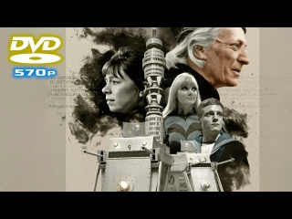

Субтитры: Русские и Английские |  |
|---|
| Изначально все эпизоды утеряны * 2-й эпизод найден в 1978 году - 16mm t/r * Остальные эпизоды найдены в 1984 году - 16mm t/r |
|---|
| | |
«Военные машины» переносят Доктора и Додо в Лондон 1966 года, где суперкомпьютер ВОТАН планирует захватить мир с помощью подконтрольных ему боевых машин. Доктор раскрывает гипнотический контроль ВОТАНа над людьми и, объединившись с новыми союзниками — Беном и Полли, — находит способ обезвредить угрозу. Серия показывает опасность слепой веры в технологии и знаменует смену спутников: Бен и Полли присоединяются к Доктору, а Додо завершает своё путешествие.
 VHS - июнь 1997 | DVD - 25 августа 2008 * Версия в нашей группе |
|---|